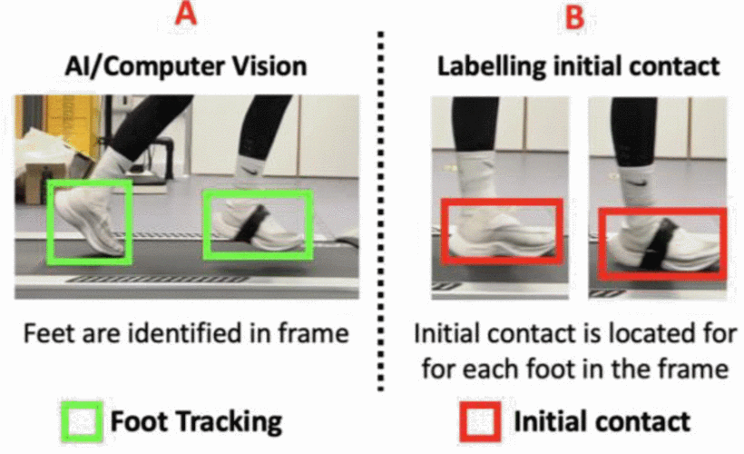
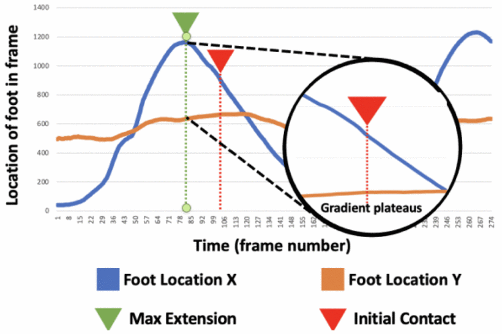

- Zero-crossing: a point where the sign of a mathematical function changes (e.g. from positive to negative)
- Gradient: a gradient is a derivative of a function that has more than one input variable. Known as the slope of a function in mathematical terms
- Initial Contact(IC): the moment the foot first makes contact with the ground during gait
- Bounding Box: the border's coordinates that enclose an image. They are often used to bind or identify a target and serve as a reference point for object detection and create a collision box for that object
- Intersection over Union (IoU): a metric to evaluate how close the prediction bounding box is to the ground truth
The project will use lightweight Computer Vision to identify and track the feet within a video frame captured by a smartphone camera, developed in Python's OpenCV library. The tracked location of the foot informs a zero-crossing gradient analysis approach to identifying initial contact within running gait
- Record the participants lower body (make sure to capture the feet!) while they runn on a treadmill from 3 angles front, side, and back for 2 minutes from your mobile device
- Optional: Set your mobile device's recording quality to the highest possible framerate and resolution. Here's some videos on how to do it on Android or iOS.
- After finishing the recordings, we have to manually label the data.
- Draw a bounding box that encloses both feet for each frame
-
Label the initial contact (IC) for each relevant frame. Make
sure to repeat this process for each foot!
Sample Data
In this section we're going to be go over references from the actual research on how the training was done and how we can leverage their findings
-
Foot Detection Model Part #1: Object Detection [1]Breakdown:
The researchers investigated 3 main object detection models to find the best foot tracking approach. Those models are the ff listed below:
-
Faster RCNN inception v2
-
Faster R-CNN is a deep convolutional network used for object detection, that appears to the user as a single, end-to-end, unified network. The network can accurately and quickly predict the locations of different objects.
[2]
-
-
RFCN resnetIOI
- RFCN - Region Based Fully Convolutional Neural Network
-
ResNet-101 is a convolutional neural network that is 101 layers deep. You can load a pretrained version of the network trained on more than a million images from the ImageNet database [1]. The pretrained network can classify images into 1000 object categories, such as keyboard, mouse, pencil, and many animals.
[3]
-
ssd mobilenet−v2
-
SSD Mobilenet V2 is a one-stage object detection model which has gained popularity for its lean network and novel depthwise separable convolutions. It is a model commonly deployed on low compute devices such as mobile (hence the name Mobilenet) with high accuracy performance.
[4]
-
The models were trained using a 75:25 train/test split ratio (in simple terms, 75% of the data was used to train the model and 25% were used to validate the results).
These models also utilized
transfer learning, trained utilizing a deep learning server (12GB Nvidia K80, 16GB RAM, Python 3.8, TensorFlow 1.15.2). During training, a grid search optimization strategy was deployed to ensure maximum performance and efficiency through autonomous benchmarking
[1] -
Faster RCNN inception v2
-
Foot Detection Model Part #2: Foot Tracking [1]Breakdown:
- Once the object detection component detects a foot
- An object tracking instance was used to track the foot in the video
- The vector location (X,Y) of each tracked foot is stored for every video frame to be used further in gradient analysis
-
2 high performance object tracking approaches were also
investigated to determine the optimal combination of foot
detection/tracking method (listed below):
- discriminative correlation filter with channel and spatial reliability (CSR-DCF)
- kernelized correlation filter (KCF)
Now we're going to be creating and training the model for gait analysis on running. We will be using Faster RCNN Inception v2 with the tracking method: CSR-DCF object tracking. If you're wondering why, we chose these variables Section 3 shows that these two are the most optimal and high performance methods for our use case.
- Train model using a 75:25 train/test split ratio (75% of data for training, 25% for validation)
- Adjust model parameters
-
Validate data.
- Object detection component detects foot in frame
- Object tracking instance tracks the foot in the video
- vector location (X,Y) of each tracked foot is stored for every video frame for gradient analysis
-
Plot and analyze results via Gradient Analysis
Sample Gradient Analysis Chart
- IC is the point of first impact with the ground after a full stride extension [5]
-
maximum extension of the leg is identified through locating a zero-crossing gradient peak within the horizontal foot plane
[1]
(Refer to Foot Location X in graph) -
Once identified, a 30-frame region of interest (equating to 0.125s) is searched for the largest gradient change in vertical location (i.e., foot has stopped accelerating in the vertical plane), denoting an IC event
[1]
(Refer to Foot Location Y in graph) -
Pseudocode:
Algorithm 1 Initial contact (IC) identification
Require: Vector location (X,Y) of foot in video stream data
Ensure: Identify initial contact
for frame in video_stream:
if horizontal frame foot location is a gradient crossing peak:
append max_extensions list
for max extension in max extensions
ROI = max extention + 30 frames
IC = MAX gradient change in vertical movement
return frame number where IC exists within each video stream
- Repeat Steps 2-4 until satisfied with results
-
Foot Location X: Distance Between Peaks Analysis
- Remember that, we discussed that the zero-crossing gradient peak of Foot Location X denotes the point of maximum extension
-
We could calculate the distance between peaks and come up
with the following leads:
- If the distance between peaks is roughly the same for each interval, the runner has good running form
- If the distance between peaks fluctuates between high and low values, there could be an issue with the runner's form and there must be some underlying cause to it
-
Foot Location X: Slope of a Line Between Peaks Analysis
- Assume that Peak A and Peak B, are two peaks separated by one interval of Foot Location X
- We could draw a line from Peak A and Peak B and get the slope of that line
- In a perfect world, we would want a consistent gait where the max extension would be the same for each interval and the slope of the line from Peak A and Peak B would be 0
-
Since that is hardly the case we could come up with 3
different cases using the slope of the line between peaks
instead:
- If there are several intervals where the slope is too large, the runner is prone to hyperextension (high risk of injury)
- If there are several intervals where the slope is too small (or has a really high negative value), the runner is prone to hypoextension (although rare, still has a high risk of injury)
- If the slope is approximately close to 0, the runner has good running form
-
X-axis distance between
Max Extension and
Initial Contact
- One thing everyone knows about running is that one should never strike the ground when the foot is fully hyperextended (at max extension) because this position has a really high chance of injury and joint-related problems
- Using the data from the graph, we could calculate the distance between the max extension and initial contact in the x-axis
-
After getting that number we could come up with the ff
cases:
- If the distance is too small, the runner has a high risk of injury
- If the distance is too large, the runner has a high risk of injury (missing the ground strike and falling fround)
- There's probably more applications of this data and it is up to your creative mind on how to use it!
- F. Young, R. Mason, J. Moore, S. Stuart, R. Morris and A. Godfrey, "A proposed computer vision model for running gait assessment," 2022 44th Annual International Conference of the IEEE Engineering in Medicine & Biology Society (EMBC), 2022, pp. 4773-4776, doi: 10.1109/EMBC48229.2022.9871739. https://ieeexplore-ieee-org.proxylib.csueastbay.edu/document/9871739
- Gad, Ahmed Fawzy. “Faster R-CNN Explained for Object Detection Tasks.” Paperspace Blog, Paperspace Blog, 9 Apr. 2021, https://blog.paperspace.com/faster-r-cnn-explained-object-detection/#:~:text=Faster%20R%2DCNN%20is%20a,the%20locations%20of%20different%20objects
- “Deep Network Designer.” ResNet-101 Convolutional Neural Network - MATLAB, https://www.mathworks.com/help/deeplearning/ref/resnet101.html
- Mehta, Vidish. “Object Detection Using SSD Mobilenet V2.” Medium, Medium, 22 May 2021, https://vidishmehta204.medium.com/object-detection-using-ssd-mobilenet-v2-7ff3543d738d
- S. A. Dugan and K. P. Bhat, "Biomechanics and analysis of running gait", Physical Medicine and Rehabilitation Clinics, vol. 16, no. 3, pp. 603-621, 2005